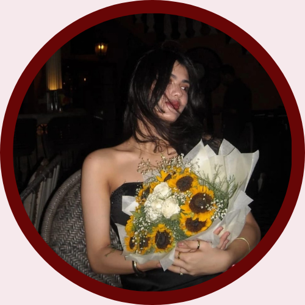
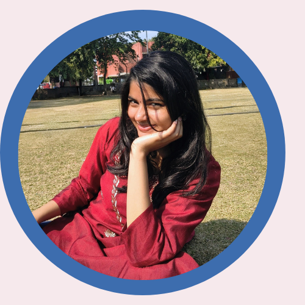

Hi,
this is Nivedita, the Founder of Muse.
I am currently pursuing a degree in Computer Science and Mathematics at the University of Delhi.
My academic interests lie at the intersection of technology, media, and culture — particularly in content curation and front-end development.
If you’d like to know more about me:
LinkedIn:
Nivedita Singh Somvanshi
If you want to be a part of Muse, contact our team at:
Email:
MUSE

I'm Aarna, the Co-Founder of MUSE, majoring in Economics at the University of Delhi
I view fashion not merely as aesthetics, but as a social and cultural force that reflects identity, power, and change.
With a keen interest in how creative expression influences collective thought, I bring an analytical yet artistic perspective to the magazine, shaping it into a platform that explores the dynamic intersection of art, fashion, and contemporary society.
If you’d like to know more about me:
Instagram:
@reinarra_

Hi, I’m Sakshi, a Computer Applications and Mathematics student at the University of Delhi and a Frontend Developer at Muse.
I enjoy transforming ideas into clean, responsive, and structured digital experiences. With a background in data analytics and analytical thinking, I approach development with precision, logic, and attention to detail.
If you’d like to know more about me:
LinkedIn:
Sakshi